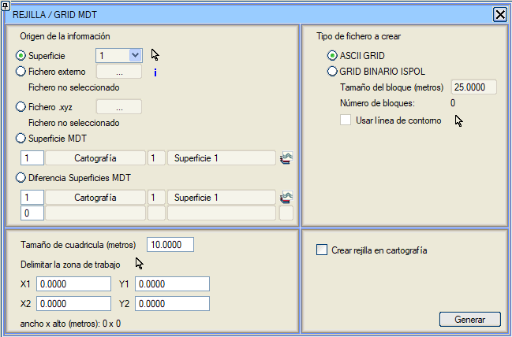
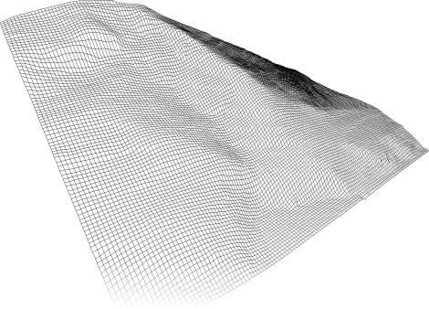

Bu işlev, haritadan ve bir grid çözünürlüğünden yola çıkarak ASCII-Grid formatında bir dosya oluşturmaya yarar.

Öncelikle, bilgi kaynağı bildirilmelidir; bu kaynak şunlardan gelebilir:
- Harita Yüzeyleri Kontrolü 'nde tanımlanmış bir yüzey. Mevcut olanlar arasından hangisinin olduğu, açılır menüden veya
 simgesine basıldıktan sonra grafiksel olarak seçilerek belirlenmelidir. simgesine basıldıktan sonra grafiksel olarak seçilerek belirlenmelidir.
- .hdr formatında bir dosya; bu, .flt uzantılı başka bir dosyada bulunacak olan ikili formatta bir gridin başlık dosyasıdır. Bu bir ArcGIS® formatıdır ve bu durumda grid zaten verilmiştir, bu nedenle ilgisi sadece ISTRAM®/ISPOL®'ün kullandığı ve VIRTUAL 3D modülü tarafından tanınan formata göre bir İKİLİ GRID dosyası (.bin) elde etmek içindir.
- Düzenli bir gridin noktalarını içeren .xyz topografik dosyası.
- SAM Yüzeyleri Kontrolü'nde tanımlanmış bir yüzey
 . SAM Yüzeyleri Kontrolü'nün yüzey numarası yazılarak tanımlanır. Bu seçenek etkinken, belirli bir SAM yüzeyinin eğim değerleriyle bir ASCII-Grid gridi oluşturulabilir. Hesaplanması için eğimin hesaplama yönünü (KG, GK, DB, BD ve Maksimum eğim) belirtmeye izin verilir. . SAM Yüzeyleri Kontrolü'nün yüzey numarası yazılarak tanımlanır. Bu seçenek etkinken, belirli bir SAM yüzeyinin eğim değerleriyle bir ASCII-Grid gridi oluşturulabilir. Hesaplanması için eğimin hesaplama yönünü (KG, GK, DB, BD ve Maksimum eğim) belirtmeye izin verilir.
- Ayrıca, iki SAM yüzeyi arasındaki kot farklarının sonucu olan bir grid de oluşturulabilir. Çalışma alanını sınırlamak için bir kontur çizgisi kullanılabilir (Kontur çizgisi kullan seçeneği etkinleştirilerek) ve çalışma alanı sınırlandırılabilir.
Ardından, oluşturulacak dosya türü seçilir; bu şunlar olabilir:
- Kullanıcının gridi oluştururken belirlediği bir ada sahip (*.asc) uzantılı, ASCII-Grid formatında bir dosya. Bu grid, kullanıcı tarafından belirtilen kare hücre boyutuna (varsayılan olarak 10 metre) sahip olacak ve uzantısı (X1,Y1) ve (X2,Y2) koordinatlarıyla sınırlanacaktır. Bu koordinatlar, simgesine basıldıktan sonra grafiksel olarak verilebilir.
- ISTRAM®/ISPOL®'e özgü ikili formatta, .bin uzantılı bir grid dosyası; bunun için blok boyutunu ve blok sayısını belirtmek ve istenirse Kontur çizgisi kullan kutucuğunu etkinleştirmek gerekir. Bu tür dosyalar VIRTUAL 3D modülü tarafından tanınır.
Ayrıca, Haritada grid oluştur kutucuğu etkinleştirilirse, oluşturulan grid EDM'de somutlaştırılır (çizmek için L0 çizgi tipi kullanılır).

|